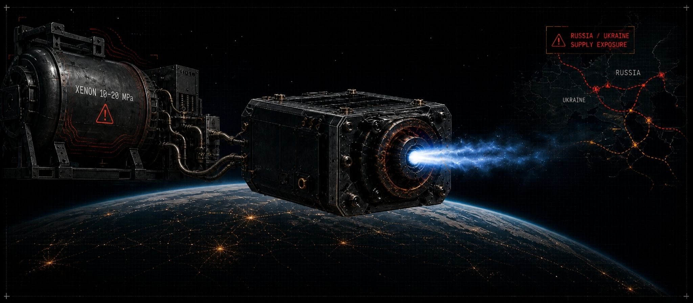

HARTWIGG
PROPULSION
Long-duration iodine-based Hall effect propulsion for CubeSats and smallsats.
More mission life. Lower propellant cost. Supply chain independence from xenon.
XENON IS A STRATEGIC LIABILITY
FOR SMALLSAT OPERATORS
Xenon has defined smallsat electric propulsion for two decades. The constraints are well understood. It is expensive — between $3,000 and $10,000 per kilogram depending on market conditions. It must be stored at 10–20 megapascals of pressure, requiring specialized vessels, loading equipment, and trained personnel.
Russia and Ukraine are the primary producers. Supply chain disruptions have already caused price spikes. Demand from mega-constellations — Starlink alone plans up to 42,000 satellites — is projected to outpace global xenon supply within ten years.
The thruster erosion problem compounds the economics. Conventional unshielded Hall thrusters erode at approximately 1 mm per 100 hours, limiting mission life to roughly 10,000 hours — approximately 14 months of continuous operation. For long-duration missions, that is not enough.

XENON VS
IODINE
Iodine delivers comparable thrust performance to xenon at all power levels in Hall thruster operation. The system-level advantages are structural, not marginal.
XENON
IODINE
WHAT IS NEW
WHY IT WORKS
Iodine Propellant Feed System
A spring-loaded mechanism holds solid iodine in optimal thermal contact with the heated tank walls in zero gravity, maintaining a consistent sublimation rate at levels useful for propulsive operation. Feed system uses materials selected for resistance to iodine's corrosive properties. Designed for 200W-class Hall thruster integration. Dynamic modeling demonstrates the tubing architecture reduces vibrationally-induced stresses during launch.
High Propellant Throughput Hall Thruster
Greater than 120 kg propellant throughput capability. Nominal thruster efficiency greater than 50%. Propellant throughput 2–5× that of existing flight heritage thrusters within the sub-kilowatt power class. Combines heritage Hall thruster design with advanced magnetic circuit design, robust propellant manifolds, and center-mounted cathodes. Prototype fabricated. Proof-of-concept demonstrated in vacuum facility testing.
Optimized Magnetic Shielding
The Optimized Magnetically Shielded (OMS) field topology reduces discharge channel erosion rates compared to conventional Hall thrusters, while also reducing front pole cover erosion compared to traditional magnetically shielded designs. Thruster lifetime extended to 50,000+ hours — a 5× improvement over the ~10,000-hour limit of unshielded designs. A shielded thruster validated this in a 7,205-hour wear test with no measurable performance degradation.
Precision Anode Manifold Design
Flow non-uniformity in propellant distribution degrades thruster performance and shortens life. The Hartwigg anode manifold uses modular insertable precision flow restrictor plugs that can be tested and sorted before final assembly. Quality control at the subcomponent level. Plugs can be fabricated from a range of materials including sintered porous metal and precision ruby orifices. Hermetic seals via press fit, threading, or laser welding.
HARTWIGG
SPECIFICATIONS
All parameters reflect TRL 4 — component and breadboard validation in laboratory environment. Architecture-level design parameters, not flight-qualified specifications.
| Division | Ibom Space — Hartwigg Electric Propulsion |
| Propellant | Iodine (I₂). Solid storage. Spring-loaded sublimation feed system. No high-pressure vessel required. |
| Thruster Type | Hall effect thruster (HET). Sub-kilowatt power class. CubeSat and smallsat compatible. |
| Propellant Throughput | >120 kg |
| Nominal Thruster Efficiency | >50% |
| Throughput vs Heritage | 2–5× improvement over existing flight heritage thrusters in the sub-kilowatt class |
| Thruster Lifetime | 50,000+ hours with optimized magnetic shielding. 5× improvement over unshielded designs. |
| Magnetic Shielding | Optimized Magnetically Shielded (OMS) field topology. Reduces both discharge channel and front pole cover erosion. |
| PPU Input Voltage | 24–34 VDC. Compatible with 28V unregulated smallsat power systems. |
| PPU Discharge Module Power | Up to 500W per module. Scalable via parallel modules. |
| PPU Output | Up to 400 VDC. Full-bridge topology at 50 kHz switching frequency. |
| TRL Status | TRL 4 — Component and breadboard validation. Proof of concept demonstrated. |
THE OPERATORS
WHO CANNOT AFFORD
TO STOP
Hartwigg Propulsion is for the smallsat and CubeSat operators for whom xenon's constraints are a mission limiter — not a budget line item to optimize around.
Defense programs requiring responsive space. A smallsat that can reposition rapidly in response to a new tasking requirement needs propulsion that does not run out. Iodine's higher propellant density per unit volume and the OMS thruster's 5× life extension changes the mission calculus for persistent presence missions.
LEO constellation operators facing xenon supply risk. As mega-constellations scale, xenon demand will outpace supply. Operators who transition to iodine now build a propulsion supply chain not exposed to the geopolitical and market volatility that will affect xenon-dependent programs.
Science and exploration missions beyond LEO. Lunar and deep space smallsat missions are propellant-mass-fraction-constrained. Iodine's solid storage removes the high-pressure tankage mass penalty. The OMS thruster's lifetime ensures the propulsion system outlives the mission profile.
Any operator needing reliable end-of-life deorbit compliance. As space debris regulations tighten, smallsats that cannot deorbit are a liability. Hartwigg provides the delta-v budget and mission life to execute deorbit without compromising the primary mission.